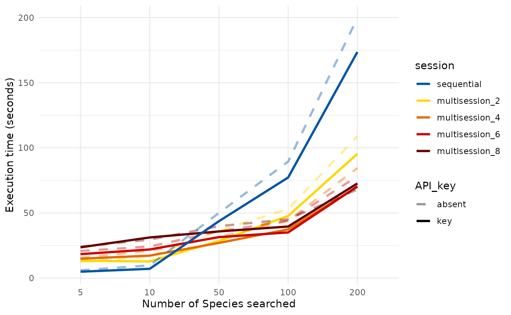

Speeding up the recovery of DNA barcodes
Source:vignettes/api_rate_barcodeMineR.Rmd
api_rate_barcodeMineR.RmdNOTE: This is a temporary GitHub repository created for testing purposes.
The time required to mine DNA barcodes from the NCBI nucleotide database depends on how many species/taxa are searched and how many records correspond to each taxa. Due to the structure of the barcodeMineR functions, and its consequent usage, different approaches can be adopted to speed up the procedures, with varying effects.
Although the rationale and functioning behind each method is described below, including the fine tuning of the functions’ arguments, it is suggested to follow the functions’ default parameters, and, at the same time, adopt all of the approaches here described, which do not only speed up the recovery of DNA barcodes, but also reduce excessive blocking from the servers.
API rate limit
The NCBI servers allows up to only three requests per second from a single user. If this limit is not respected, the NCBI will block further requests for some time. If a request takes less than 1/3 of a second to finish, then this represents the maximum rate that can be adopted for these analyses.
For example, if we have a vector of 100 species, we can expect a theoretical execution time for the get_ncbi_taxonomy function of 66.67 seconds:
library(barcodeMineR)
# extract example dataset with 200 species from the Ross Sea (Antarctica, Southern Ocean)
specs <- barcodeMineR::species200
tax <- get_ncbi_taxonomy(specs[1:100], ask = FALSE)And, during the rendering of this vignettes, it executed in 1.54 minutes.
This api rate, which is the default for the ncbi functions of the barcodeMineR package, is, however, highly subjected to changes in the speed of the internet connections, and might delay some requests at certain times, leading to an accumulation of four requests in a window of one second of time.
In order to avoid this, a higher download rate can be adopted if the user decides to register a NCBI account. Using an API key, the user can send up to 10 requests per second to the NCBI.
This can be done “externally”, in respect to the barcodeMineR functions, following the rentrez documentation, specifically with this function:
set_entrez_key("ABCD123")By setting an NCBI account, the user assures that requests that don’t take much time can be executed even faster, and avoid excessive blocking when the internet connection is particularly unreliable. Including an NCBI API key approximately halves the execution time of the get_ncbi_taxonomy, when querying multiple species at once.
The above command is executed, during the rendering of this vignette, in 44 seconds.
All ncbi functions of the barcodeMineR package would benefit from the inclusion of an API key, which increases speed of fast requests and reliability at long execution times.
Adopting an asynchronous framework
One of the main advantages of the barcodeMineR package consists in the capacity to adopt the asynchronous parallelizing framework of the future package to speed up the download of records from the NCBI repository.
The execution time of the download_ncbi function depends on how many records correspond to each single species/taxa on the NCBI nucleotide database.
For example, if we wanted to search for all records corresponding to the Antarctic krill species Euphausia superba, we could expect to download 1584 records, after an execution time of approximately 1.44 minutes, for the function download_ncbi.
tax <- get_ncbi_taxonomy("Euphausia superba")
# the execution time refers to the function below only
recs <- download_ncbi(tax, ask = FALSE)In this context, the asynchronous parallelizing framework of the future package comes in handy. In synthesis, each request is sent as a background process, which will not block the current R session to send another request at a specified time, provided that there are enough “workers” (cores) available. This means that, using the future framework, we can send a request every 1/3 of a second (or 1/10, if we set the NCBI API key), independently from the completion of the previous request.
We can setup the future framework using its functions. Here, we’re setting up the “multisession” plan using all available cores from our machine:
future::plan("multisession")You can specify the number of cores using the workers argument, and check how many cores are available using the following command:
future::availableCores()
#> system
#> 4We can revert to the “normal”, sequential framework when we’re done with our work using the barcodeMineR package, supplying “sequential” to the same command. Remember to do this before proceeding with other, unrelated work, in case you’re not interested in using the same asynchronous framework. If you’re unsure of which plan the current R session is set to, use the same command without arguments.
This plan (“multisession”) works on all OSes, on both Rstudio or the command line. It will significantly speed up the recovery of records from the NCBI, especially for the download_ncbi function, but can also improve the speed of get_ncbi_taxonomy (see this section for more details).
Now, the entire process of downloading Euphausia superba records will take sensibly less time than in “sequential” future plan, providing the final results after 1.01 minutes.
Tips
- Progress bar
When downloading large numbers of records from BOLD or the NCBI databases, it is suggested to include a progress bar. Again, here we’re relying on another beautiful package, the progressr package. As for the future package, we don’t need to supply specific arguments to the barcodeMineR functions to activate it, but we can do it “externally”:
Now, a progress bar will appear while downloading records, and different messages will occasionally be printed to inform the user of the current status of the operation. The progress bar can be modified, according to the user’s preferences, as reported in the progressr documentation.
- Multisession and get_ncbi_taxonomy:
Adopting the future asynchronous framework can significantly improve the execution of the download_ncbi function, but can also improve the speed of get_ncbi_taxonomy, when the “multisession” plan is set with two to four workers (cores). In fact, setting up a “future”, a background process, takes the future package some time, and, for requests that do not take much time it is suggested to not include too many workers in a “multisession” plan, as they would not significantly improve the speed.
Below, the execution time of the function get_ncbi_taxonomy, at different future plans is shown, revealing how most of the improvement is observed after including the NCBI API key:  ## Why can’t I speed up the BOLD functions?
BOLD servers maintenance does not support an API rate limit, like the NCBI does, and, for this reason, a certain number of requests sent in a particular window of time may result in a temporary blocking by the BOLD servers. The factors the mostly influence the occurrence of this inconvenience are two:
- Number of requests:
The bold functions have default settings that try to avoid sending too many requests at a time. For example, the default api_rate argument setting of get_bold_taxonomy allows to search a specific taxon every 1/0.06 seconds, meaning that the maximum number of requests is set to 250 per hour. Although it can be considered pretty low, this comes from recent testing (May 2024) that detected frequent blocking when querying the BOLD taxonomy database when surpassing this limit. This only applies to taxa that do not include children, thus only for species. When searching higher level taxa leaving the descend argument to TRUE (default), by relying on the usage of the package taxize, the limit might be more easily surpassed when many children are included.
- Size of requested data:
Differently from the get_bold_taxonomy function, the download_bold function has a higher limit, which mostly depends on the amount of data that is requested each time. When querying a long list of species names, the function is set to send each request every second, without frequent blocking. However, this depends on the amount of data that correspond to each taxon. If, for example, we were to search for all Arthropoda sequences on BOLD, although the get_bold_taxonomy function would run smoothly, provided that the descend argument is set to FALSE, the download_bold would surely fail, resulting in a temporary blocking by the BOLD servers. When using download_bold, only search low level taxonomies (downward from family), as suggested by the bold package.
Tuning the functions’ arguments
Different arguments can be tuned to improve speed and/or reliability of requests to the NCBI servers. These include the rate of xml or fasta downloads and the API rate:
The api_rate argument allows to override the default settings of the NCBI requests rate. The future plan framework allows to send requests every 1 / api_rate seconds, thus ensuring that no more that ‘api_rate’ requests will be sent in a window framework of 1 second. However, due to fluctuations in the internet connection, still more than api_rate number of requests might arrive to the NCBI servers, causing errors. The function can handle up to 5 consecutive errors per request, but too many errors might block the whole process. The api_rate parameter can be modified in order to slow down the requests sent per second. It overrides the automatic selection of the optimal parameter (either 3 or 10) and accepts one decimal degree number between 1.0 and 10.0, so if the internet connection is particularly bad, it can be set between 2.5 and 2.0, for example, in order to slow the number of requests per second and reduce the possibility of errors.
The rate argument of the get_ncbi_taxonomy and download_bold and the arguments rate_xml and rate_fasta for the download_ncbi function allow to set the number of taxa/species that will be queried with each request and has impacts on the memory usage of the package. Although decreasing or increasing their value does not significantly impact the speed, it is worth mentioning that, in case of low memory availability, reducing the amount of xml or fasta sequences downloaded at a time may improve the performance. Nonetheless, it is better to keep the values to default settings, which have been tested on different settings.